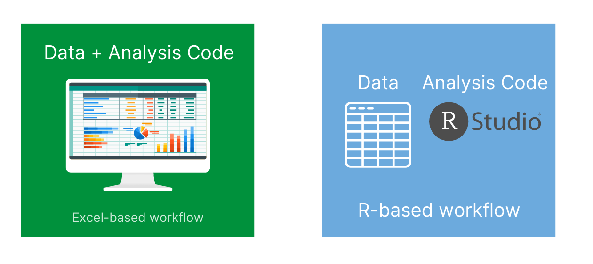
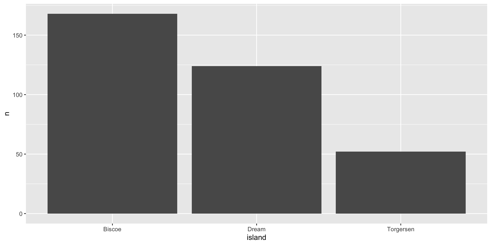
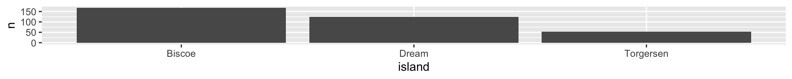

R in 3 Months Week 4 (Quarto)
What is one way that you can see yourself using Quarto in your work?
Put your answer in the chat!
Agenda
Housekeeping
Data Wrangling and Data Viz Questions
Quarto Exercise
Quarto Tips
Next Week
Housekeeping
- Next week is a catch-up week: no live session or co-working session
Questions on Data Wrangling or Data Viz?
When is data real?
I would like you to help me confirm that once an Object appears in the Environment Panel, it’s automatically saved. In this case our object is
penguins.

When is data real?

Source: rstats.wtf
Quarto
Quarto Exercise
Quarto Exercise
Copy the code from this Quarto document. Figure out why it won’t render and change it so that it will!
Copy the code from this second Quarto document. There are a series of questions in it. Tackle them one by one, making changes to the document as you do so.
Quarto Tips
Markdown Text Shows Up in Many Places!
Visual Editor
How to structure your Quarto documents
Load packages at top
Import data at top
Custom functions at top
Code chunks used throughout to make outputs (graphs, tables, maps, etc)
I also do data cleaning/tidying in a separate R script file (you’ll learn about this soon)
How I use Quarto documents is not how you have to use Quarto documents!
So, is the purpose of Quarto primarily for data viz? It isn’t something that for example you’d use for summary stats unless have some visual component with it?
Many people do data cleaning and exploratory data analysis in Quarto documents!
How to change the size of plots in Quarto documents
How to change the size of plots in Quarto documents
How to change the size of plots in Quarto documents
How to make multi-column layouts in Quarto documents
Column 1
Column 2
How to make multi-column layouts in Quarto documents
How to change the look and feel of Quarto documents
Depends on output format
For Word, use reference documents
For PDF, check out
typstformatThere are lessons on each of these later in R in 3 Months!
brand.yml
Quick note about projects with Quarto
Any Other Quarto Questions?
Next Week
Catch-up week! No live session or co-working sessions are happening, but please reach out to Gracielle for any help you may need!
For following week, you will be learning about advanced data wrangling, focusing on the concept of tidy data. You can start whenever you would like to!